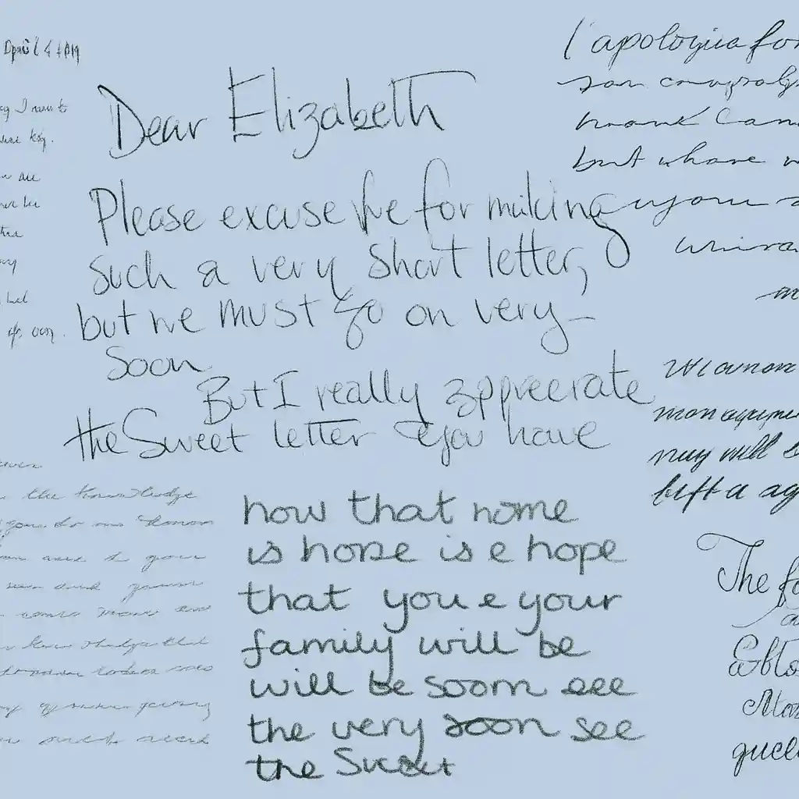

Graphology
Handwriting, the Intimate Reflection of the Self
Graphology delicately unveils the deepest layers of the personality through the analysis of handwriting. Far more than a simple observational tool, it opens a sincere and nuanced path to self-knowledge.
After more than thirty years of study and practice in graphology, I approach each analysis with a blend of experience, methodological rigor, and intuitive sensitivity. My goal is to offer an authentic, respectful reading of what makes you truly unique.
Graphology: The Art of Deciphering the Soul Through Writing
Graphology is a rigorous observational discipline, founded on a precise and coherent methodology. For over a century, it has drawn the interest of psychologists, psychiatrists, and medical professionals, all aware of handwriting’s profound potential as a mirror of the personality.
Each graphic movement, each subtle nuance in the line, forms a true psychological code—one that only a trained eye can fully decipher. Through refined techniques and established psychological theories, the graphologist reveals, with accuracy and depth, the most authentic traits of the writer
Across the centuries and the varied approaches to the study of human expression, graphology stands out as a unique and fascinating method. While facial expressions and bodily gestures may capture fleeting glimpses of the soul, handwriting reflects personality in a far more intimate and enduring way. A true imprint of the being, it often bypasses conscious filters to express our deepest nature, unadorned.
Graphological analyses offer numerous advantages: They provide an extremely personalized understanding, as each handwriting is as singular as the individual; and they allow for a more objective assessment, less prone to emotional or rushed judgments.
Whether to better know oneself, to understand a loved one more deeply, or to offer a meaningful and singular gift, a graphological reading offers a rare encounter with the true essence of each person.